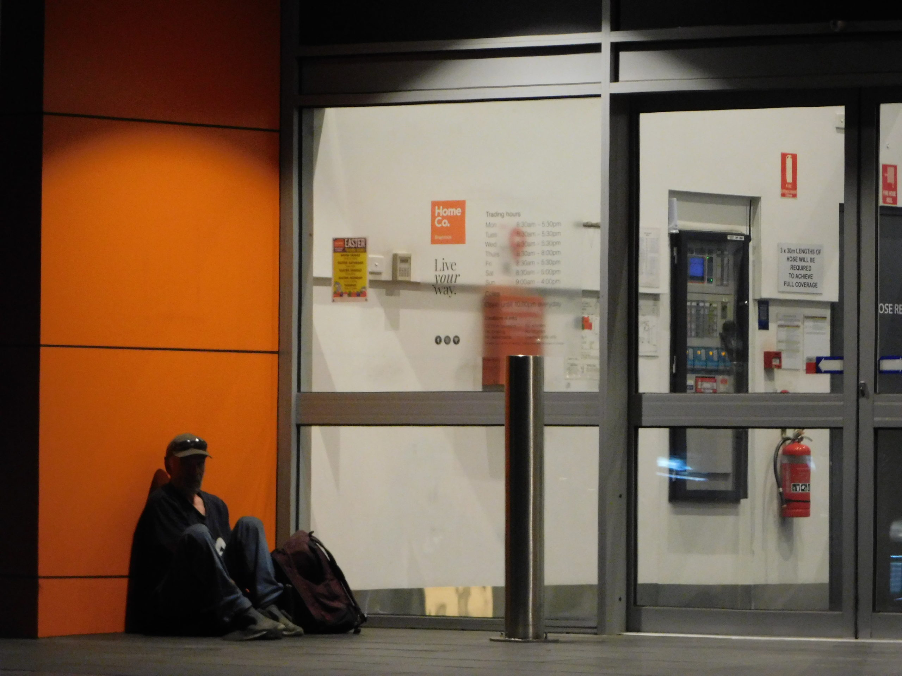

I’d like to introduce Joy Braddish who’s studying for a Master of Journalism at the University of Melbourne’s Centre for Advancing Journalism. She’s undertaking an internship at Lateral Economics where one of the things she’s helping us with is making some explainer videos. The article below is a project she did on homelessness. When she told me she was writing an article on the conclusion of the COVID homelessness programs, I sent her some unsolicited comments, which she liked, and worked into the article. (Here at Troppo too much Troppo is barely enough). She approached several others in the industry but due to the sensitively of the topic they were reluctant to comment.

“24,000 Victorians will be homeless tonight”: Rough sleepers are not the only Victorians affected by the housing crisis
As Victoria settles into Covid-normal, many Victorians will return to their ‘normal’ – lives filled with uncertainty.
David* used to be a successful carpenter prior to his relationship breakdown which left him sporadically homeless for over three years.
“I had some problems with my partner, and I used to not be allowed back at home for about three or four nights a week” says David, a 47-year-old single dad.
“I had a good relationship with my son, it was just a bad relationship with my partner, and I became very depressed and drank too much and found myself on the streets”.
“We were living in St Kilda at the time. When I had nowhere to stay I used to sleep in Catani Gardens” David says.
Around a year ago David moved into his elderly parents’ home, temporarily.
“I did a stint in jail and I was at rock bottom and had to move in with my mum and dad, hopefully, not for too long. Hopefully I’ll get my act together soon” says David.
His 14-year-old son moved in with him soon after.
“He was meant to be living with his mother, but he came to stay with me and just never left” says David. “Now that I’ve got a home, that’s the only reason he’s with me”.
David says stable social housing “would definitely help with my mental health and it would definitely help with my son. He could be a kid again and it would get him to school”.
At the peak of the Covid-19 pandemic, around 2000 Victorians suffering from homelessness, primarily rough sleepers, were provided with emergency accommodation in local hotels and motels under the Victorian government’s Home for Homeless scheme. The state government was compelled to re-locate Victorians experiencing homelessness into hotel accommodation ensuring all Victorians were aligned with Stage-4 restrictions.
“This exercise had given us a natural experiment with which we can interrogate the cost effectiveness of spending more on the homeless” says Dr Nicholas Gruen, economist, and CEO of Lateral Economics.
“It is quite likely that it has lowered total government outlays, via less stress on the homeless, who often have mental health problems, lower police and ambulance calls, assaults etc.” Dr Gruen says.
But the problems faced by rough sleepers are only part of Victoria’s housing challenges.
“Homelessness is not rooflessness” states the Victorian Council for Homeless Persons (CHP). It outlines that “a home means security, stability, privacy, safety and being able to control your space”. By this definition, it estimates that over 24,000 Victorians will be homeless on any given night, including “families with children, young people, older people, single adults and people with disabilities”.
Last July Premier Daniel Andrews stated, “this funding will also see the Government extend current hotel accommodation until at least April next year while these 2,000 Victorians are supported to access stable, long term housing”.
A report by the CHP found that this would not be achieved nationally as “only one third of people living in Australian emergency hotel accommodation during the pandemic were able to be moved into long-term housing due to a national shortage of social housing accommodation.”.
The CHP report revealed “in most states, people have had to return to the streets or to unstable temporary living situations after a stay in hotel accommodation”.
While Victoria trails the rest of the country in its spending on social housing, Premier Andrews’ pledge to help rough sleepers out of homelessness, appears to have been backed by action.
This vanguard scheme to help over 1,800 Victorians into long term housing will see Victoria taking a unique, effective pathway in the fight against homelessness and is strongly supported by community organisations.
“The Vic Gov Homeless to a Home program (H2H) aims to house all of those people who were placed in emergency hotel accommodation during the pandemic” says Kye White from the CHP.
While the H2H initiative is a key measure in beginning to tackle the state’s housing crisis and is a huge win for Victoria, it will not assist David into a home. He is not part of the program but one of the other thousands of Victorians who are on the waiting list for social housing. His situation is still precarious as he will eventually need to move out of his parents’ home.
“I need to get a job. I’m trying, and once I get a job it will take another, probably couple of months, to save up some bond and rent” says David.
“If there’s no work, I’m screwed. I’m stuck in the same spot, just going in circles and who knows how long this, with my mum and dad, is going to last, and I might be on the street again and then I’ll lose my son again”.
Everyone's anxious about how we emerge from the biggest economic crisis in most of our lifetimes. But as we toss round media taglines like 'building back better' most of us will be just fine. Meanwhile, for those like David, the stakes could hardly be higher.
*Name has been changed to protect the person’s identity
interesting. A large RCT in Canada on giving homeless people a permanent home basically failed: the lives of the homeless did not get better, nor did they become cheaper for the government. A very sobering experiment, but maybe the Victorian natural experiment will show otherwise.
See eg. https://jamanetwork.com/journals/jama/article-abstract/2174029 which concludes "scattered site housing with ... services ... resulted in increased housing stability over 24 months, but did not improve generic quality of life".
Stergiopoulous has written a lot on that experiment.